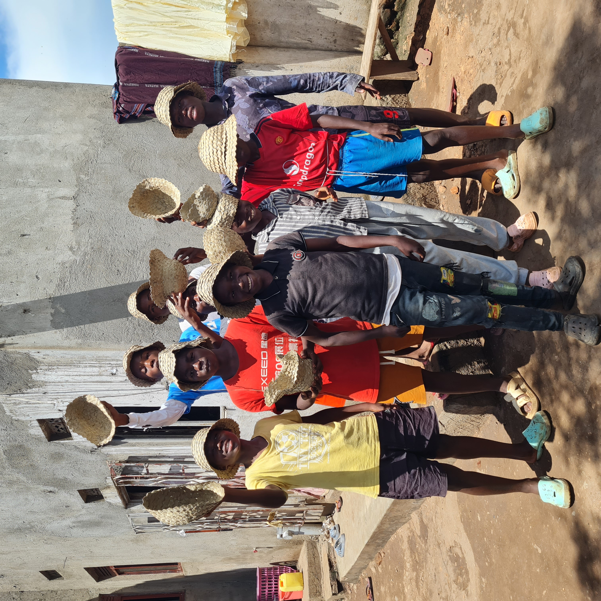
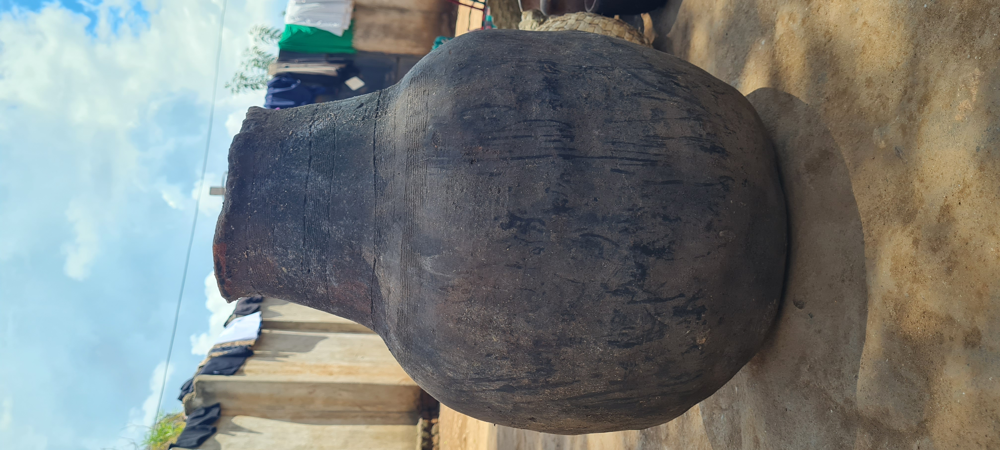
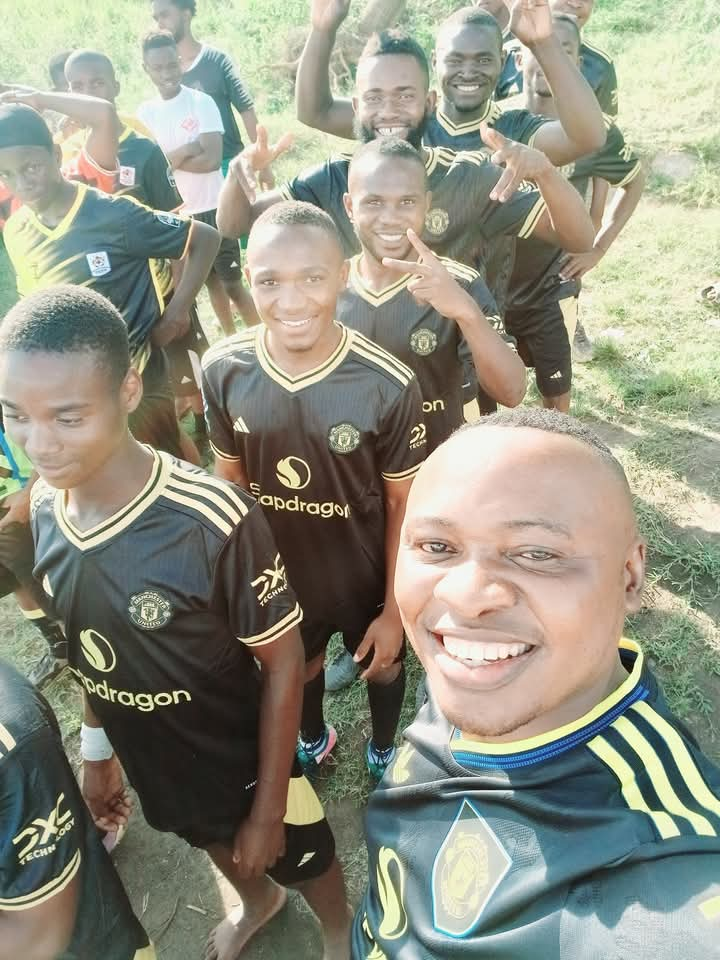
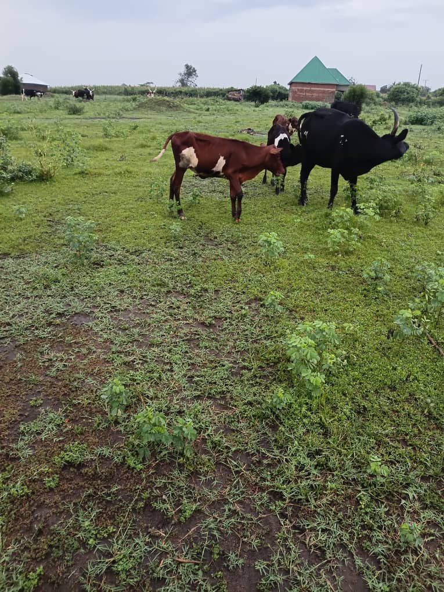
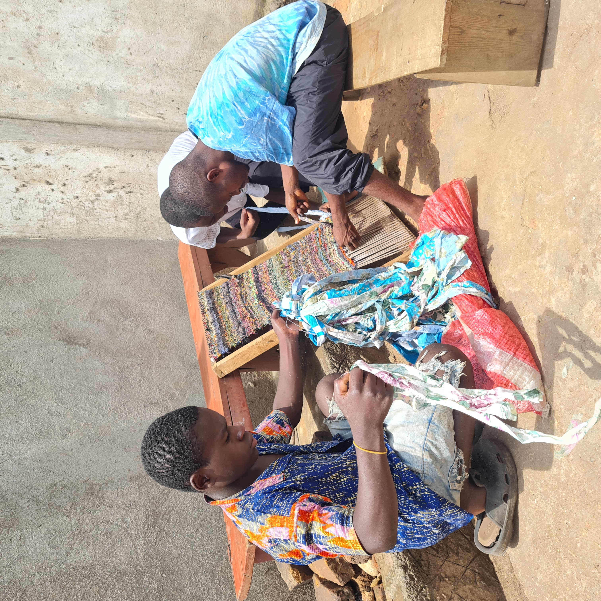
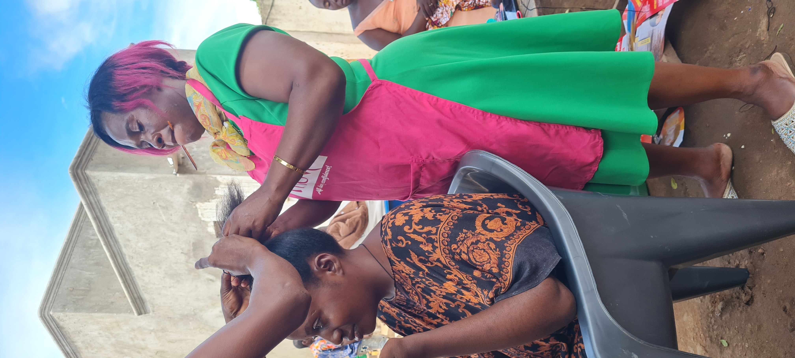
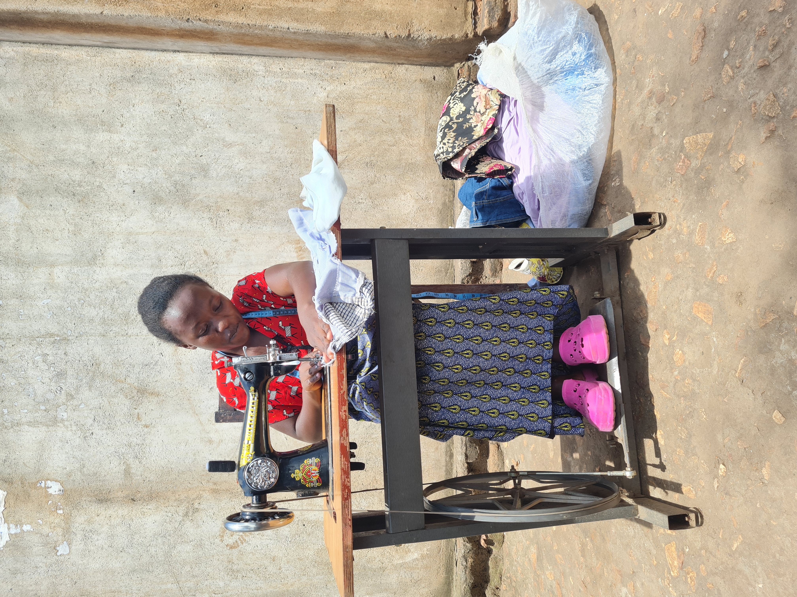
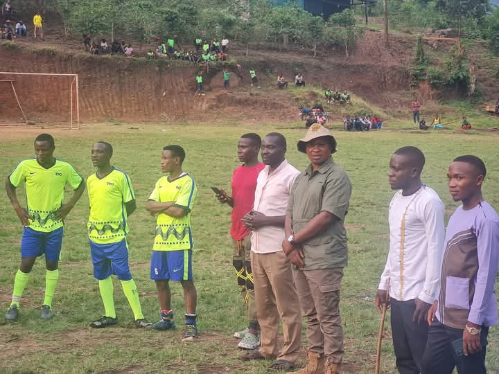
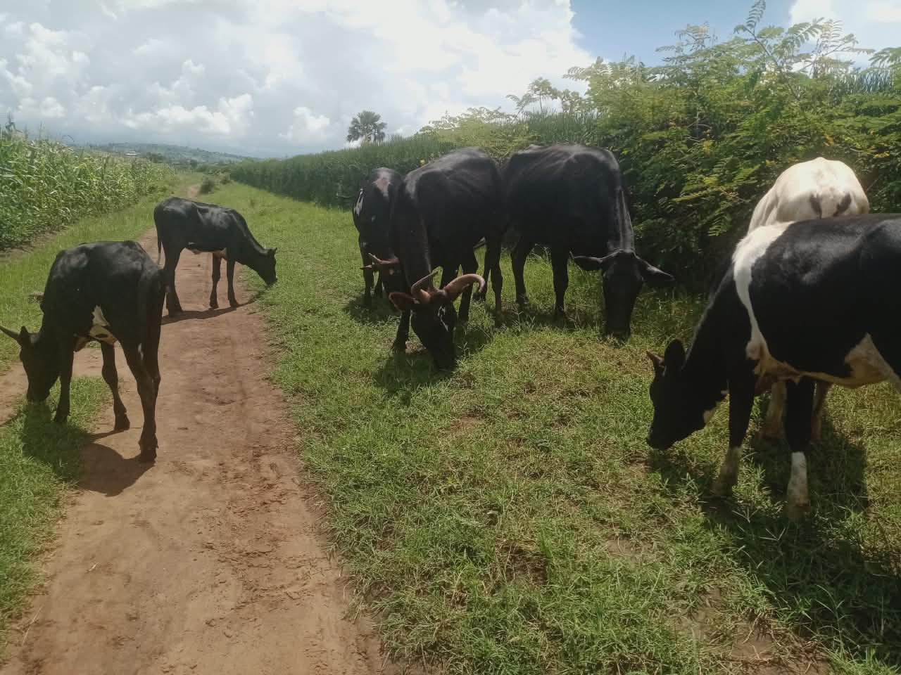

From fish ponds to football fields, from tailoring to tapestry — FAPCAN's activities build skills, sustain families, and weave a community together through shared purpose and hands-on work.
Each activity at FAPCAN is more than work — it is a vehicle for dignity, self-reliance, and community cohesion.
Community fish ponds provide food, income, and aquaculture skills.
Learn MoreMaize, beans, groundnuts — whole families grow together.
Learn More








At FAPCAN, every activity is grounded in our belief that dignified work transforms lives.
Generating income and food security for the long term.
Open to all members regardless of ability.
Family farming builds bonds as strong as the harvest.
Tailoring and basketry empower women and youth with enterprise.
Your support gives more families access to skills, food, and a future.